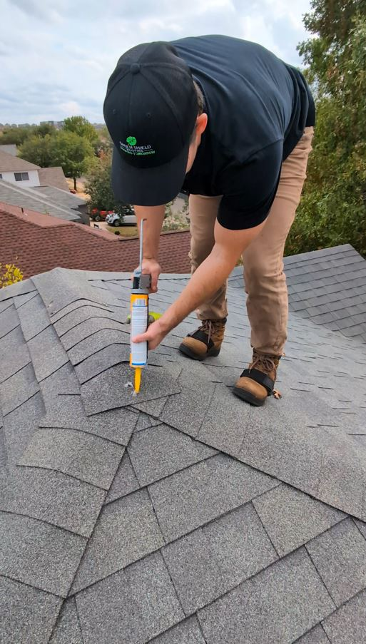

Why Annual Roof Maintenance Is Essential in Central Texas
Your roof is one of the most important systems protecting your home from Texas heat, hail, wind, and heavy rain. At Green Shield Roofing, our Annual Roof Maintenance Program is designed to catch small issues early, extend the life of your roof, and help you avoid expensive repairs.
Roof damage doesn't always come from major storms. In many cases, leaks begin with small, hidden issues like loose fasteners, deteriorating sealants, clogged drainage areas, or early material failure. Our maintenance program identifies and addresses these problems before they become costly emergencies.
Homeowners across Austin, Round Rock, Georgetown, Dripping Springs, Leander, Cedar Park, Harker Heights, Killeen, and all of Central Texas receive a professional roof inspection and preventative maintenance performed by experienced roofing specialists—not salespeople. Think of annual roof maintenance like routine maintenance for your home—low cost now, major savings later.
Get Started Today
Benefits of Annual Roof Maintenance
Prevent Roof Leaks Before They Start
Early detection of minor issues like loose fasteners or failing sealants prevents water infiltration that can lead to expensive interior damage and repairs.
Extend Your Roof's Lifespan
Regular maintenance can add years to your roof's life by addressing wear and tear before it compounds into major deterioration. Our client's roof typially last 3-5 years longer than the average Central Texas shingle roof when we conduct routine annual maintenance.
Protect Your Home's Interior
Routine maintenance of your roof, particularly re-sealing around all roof vents, accessories, and penetrations will prevent water leaks into your attic. This prevents wood rot and mold/mildew growth inside your home.
Reduce Emergency Repair Costs
Catching small problems during routine maintenance costs far less than emergency repairs after a leak has caused significant damage.
Peace of Mind
Know that your roof is professionally inspected and maintained, protecting your family and your investment throughout the year.
What's Included in Our $149 Maintenance Service Visit?
✓ Comprehensive roof inspection (shingles, flashing, penetrations)
✓ Preventative maintenance & minor repairs
✓ Photo documentation of roof condition
✓ Written summary with honest recommendations
✓ Expert advice on extending roof lifespan
✓ No scare tactics or high-pressure sales
Book Your Maintenance VisitWho Our Annual Roof Maintenance Program Is For

This service is ideal for homeowners in Austin and Central Texas who value preventative care and want to protect their investment. Our maintenance program is especially beneficial for:
Perfect For Homeowners Who:
- Have a roof that is 5 years or older
- Want to avoid surprise roofing expenses
- Live in hail- or wind-prone areas
- Plan to stay in their home long-term
- Value preventative roof care over emergency repairs
- Want to maintain their manufacturer's warranty
- Prefer working with roofing professionals, not salespeople
Whether your roof is relatively new or approaching the end of its expected lifespan, regular maintenance helps you get the most value from your roofing investment while avoiding costly surprises.
Annual Roof Maintenance Throughout Central Texas
Green Shield Roofing provides professional annual roof maintenance services across Central Texas, including:
- Guadalupe County: Seguin, New Braunfels, Schertz, Cibolo, Marion
- Bell County: Temple, Belton, Killeen, Harker Heights, Salado
- Travis County: Austin, Pflugerville, Lakeway, Bee Cave, Manor
- Bexar County: San Antonio, Live Oak, Universal City, Converse, Helotes
- Williamson County: Round Rock, Georgetown, Cedar Park, Leander, Hutto
- Comal County: New Braunfels, Bulverde, Garden Ridge, Spring Branch
We understand the specific maintenance needs of roofs in each of these areas and provide customized care that addresses local weather patterns and environmental factors.
What Our Customers Say

Invest $149 Today to Save Thousands Tomorrow
Don't wait for a leak to discover a roofing problem. Spending $149 today on professional roof maintenance can help prevent thousands of dollars in roof repairs tomorrow. Protect your home with annual maintenance from Green Shield Roofing and enjoy peace of mind knowing your roof is in expert hands.
Schedule Your Maintenance Visit